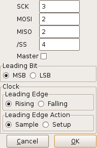

logic_sniffer.py
SPI Analyzer Settings
Specific settings for SPI data analysis are controlled from this dialog:

The various fields are:
- SCK
- the channel supplying the SCK (serial clock) signal.
- MOSI
- the channel supplying the MOSI (Master-Out/Slave-In) signal.
- MISO
- the channel supplying the MISO (Master-In/Slave-Out) signal.
- /SS
- the channel supplying the negative-logic Slave-Select signal.
- Leading Bit
-
- MSB
- the most-significant bit of a byte is received earliest.
- LSB
- the least-significant bit of a byte is received earliest.
- Clock
-
- Leading Edge
-
- Rising
- the rising edge of an SCK pulse is the leading edge.
- Falling
- the falling edge of an SCK pulse is the leading edge.
- Leading Edge Action
-
- Sample
-
- Setup
-
Control Buttons
- OK
- accepts the SPI analysis settings.
- Cancel
- throws away the values entered with no further action.